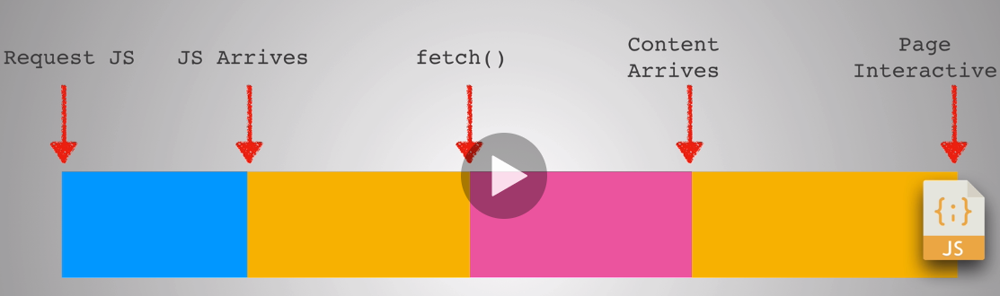

-->Javascript is a big part of any website loading
so long time parsing and compiling code for the browser can heavily delay how soon a user can interact with your site, the more javascript you send the longer it will take to parse and compile before your website becomes interactive, it's not just the parsing and compile that has a cost javascript execution which is running the code once parsing and compiling happen is one of the operations that has to happen on the main thread and that is one worker doing all the work and we can block it with heavy javascript

-->Browser do something called JIT-->just in time compilation as the js file gets loaded onto the browser they compile it right there while we wait for it to load, the angular team came up with the ahead of time compilation just from our terminal compiling it ahead of time and then just ship that code to the browser
-->don't go heavily with animation in website because it require a lot of processing and graphics power and can cause serious problem
---------------------------------------------------------
1-Time to first meaningful paint
2-Time to interactive

-->We don't want to ship all javascript in one shot to home page for example because we don't need at first js of about and contact pages so we benefits from being in small chunks to avoid locking up the main thread and we do this through something called code splitting

-->we call this code splitting or prograssive bootstraping
Lazy loading-->loading js after page becomes interactive so that the user can feel like the app is fast
---------------------------------------------------------
-->we've implemented code splitting on our own quite simple we're simply just removing the imports from the top and importing them only when we need them only when the user clicks on a route of page
Route based chunking-->chunck the js file based on routes
Component based chunking-->code split on component level
---------------------------------------------------------
localhost:3000/?react_perf -->and go to performance tab in console and check screenshots and record and make actions to your web app
chrome developer react tool-->open console -->react-->check highlight updates to see what is rendering when action made
---------------------------------------------------------
-->class components or stateful component when rendered his childerns also rendered but pure function component only changes when it's props change
-->Don't overuse shouldComponentUpdate() because it's good for performance it could actually hit your performance or sometimes miss some updates
Why did you render tool-->it's allows you to run in development and see if when you're doing any unnecessary rendering
---------------------------------------------------------

Tree Shaking-->it's done behind the scene for you by webpack and this tree shaking removes any unused code when you actually build your app so for example if you're importing a massive library but only using one function from it, it will discard all the rest
Memory Leaks-->making sure that we don't keep adding memory into our apps so for example if we have a ton of event listeners on a page and we change that page to another page let's say about page but we haven't removed those event listeners now our browsers remember more and more things such as variables increases more and more until it reaches the limit and it can crash
----------------------------------------------------------
App Manifest-->the idea is to make the web app as indistinguishable as possible to a real mobile app like icon on mobile
service worker-->is a script that browser run in the background separate from the webpage web app it's generally used for features that don't need a webpage or user interaction, it acts as programmable proxy allowing us to control what happens on a request by request basis
---------------------------------------------------------
Registering-->is just the common way for you to create a service worker on your webpage
-->once a service worker is activated and registered, it's going to be in one of two states it's either going to be terminated to save memory or it's going to be running in the background to fetch messages and events that occurs in the network request

accessiblity-->means you're opening it up to people to experience your website in different ways such as screen readers
Note-->Performance score will depend on your internet speed